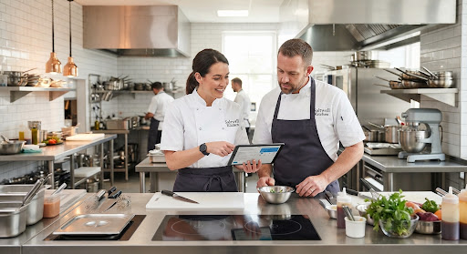
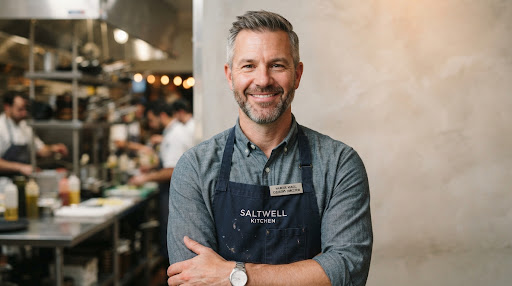
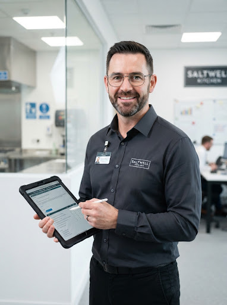

Ready to build your food business with us?
Book an on-site walkthrough. Explore our production lines, walk-in refrigeration units, and community amenities.
Founded in 2018, Saltwell Kitchen was born to dismantle astronomical capital hurdles for independent chefs, bakers, and culinary pioneers. We provide industrial-grade, certified commissaries so visionaries can craft, scale, and thrive without compromise.
Tour Our Facilities
Three foundational pillars engineered to support demanding commercial production runs and artisanal mastery.
Sanitary grade-A environments equipped with Michelin-caliber Combi ovens, blast chillers, and precision prep gear.
Incubating local artisan brands and food trucks through peer networks, supply wholesale perks, and retail pipeline access.
24/7 keycard access, autonomous backup generators, dual-loop climate safety, and continuous cold chain telemetry.
Measurable performance delivered to regional food ventures since inception.
We built Saltwell Kitchen because no great culinary dream should die in red tape, prohibitive real estate costs, or inadequate equipment.
Seasoned operators, certified master culinarians, and health safety specialists keeping our facilities humming around the clock.

Co-Founder and Head of Operations
Former executive restaurant consultant with 18 years handling multi-unit commercial kitchen rollouts across the Pacific Northwest.
Co-Founder and Facilities Director
Viennoiserie artisan and culinary educator overseeing Saltwell's specialized pastry decks, proofers, and high-hydration equipment.

Director of Food Safety and HACCP
Certified FDA compliance officer steering routine microbiological sanitation audits and local health authority onboarding for members.